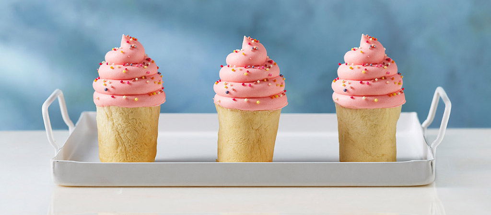

Here you can see some of the bakers' recipes and try them out yourself at home!
Alice's Orange and Cardamom Ice Cream Buns

Ingredients
For the dough:
250g strong white bread flour
25g caster sugar
20g unsalted butter
1tsp salt
7g dried yeast
1 large egg
2tsp ground cardamom
75ml whole milk
75ml warm water
Zest of 1 orange
For the icing:
100g full-fat cream cheese
100g unsalted butter
200g icing sugar
Zest of 1 orange
Pink food colouring paste
For the decoration:
Hundreds and thousands
You will also need:
8 100ml dariole moulds (approx. 6-7cm diameter)
A large piping bag with a 1cm round nozzle
An electric food mixer (not essential, but definitely helps)
Method
Make the dough. Place the flour, sugar and butter in a stand mixer fitted with the dough hook and mix on a low speed, until the butter has been evenly rubbed in.
Add the yeast, orange zest, cardamom, egg and salt. In a small bowl, combine the milk and hand-hot water and add this to the mixture in the mixer. Knead on a low speed for 5 minutes, until you have a soft and sticky dough. Cover the bowl with cling film and leave to rise for 40 minutes, or until doubled in size.
Turn out the dough onto a clean work surface and knock it back. Divide it into 8 balls and place one in each greased dariole mould. Transfer to a baking tray and place inside a large plastic bag, making sure the bag doesn’t touch the dough. Leave in a warm place to prove for about 30 minutes, or until doubled in size. Heat the oven to 220°C/200°C fan/Gas 7.
Bake the proved buns for 15 minutes, or until golden brown and well risen. Remove from the moulds and leave to cool on a wire rack.
Make the icing. Beat the cream cheese and butter together in the bowl of a stand mixer fitted with the beater. Add the icing sugar, mixing slowly until combined. Add the orange zest and then the pink food colouring to create a bright pink shade.
Spoon the icing into the piping bag and, beginning at the outer edge of the top of each cake, pipe the icing in a spiral, working towards the centre, to resemble a swirl of ice cream. Sprinkle with hundreds and thousands to decorate.